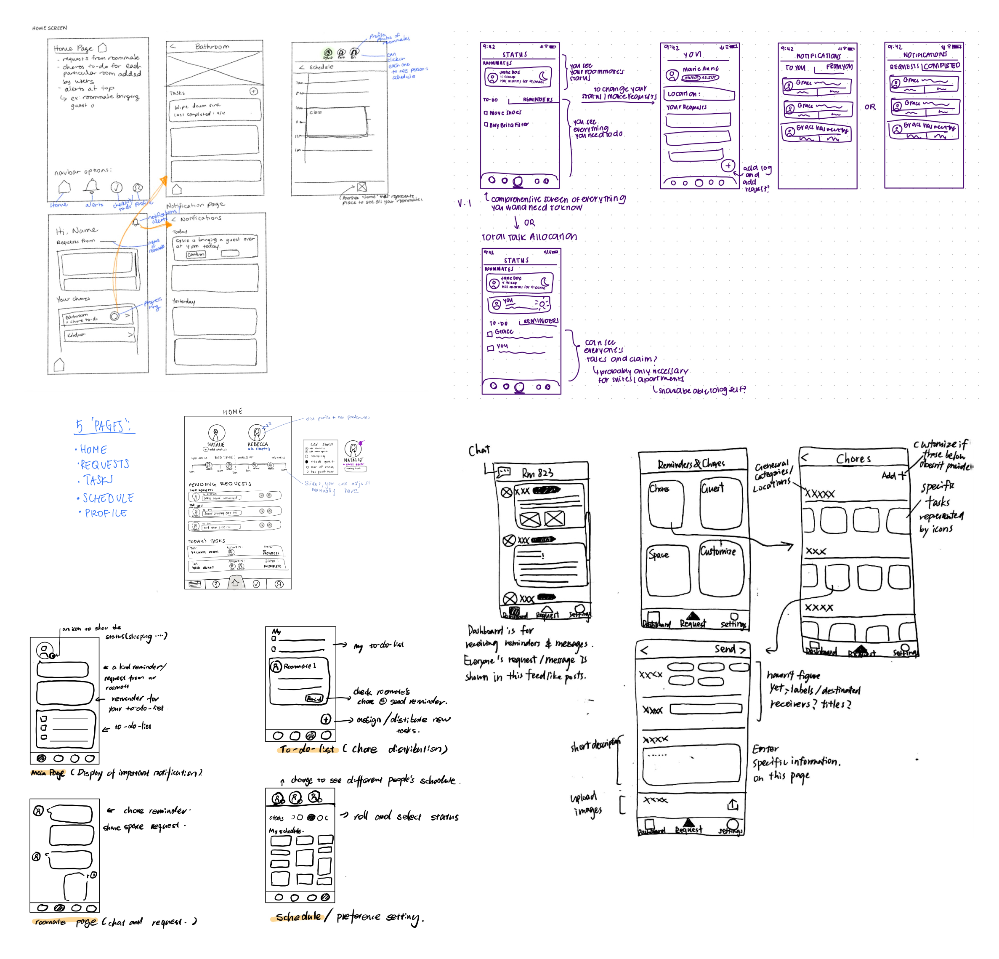
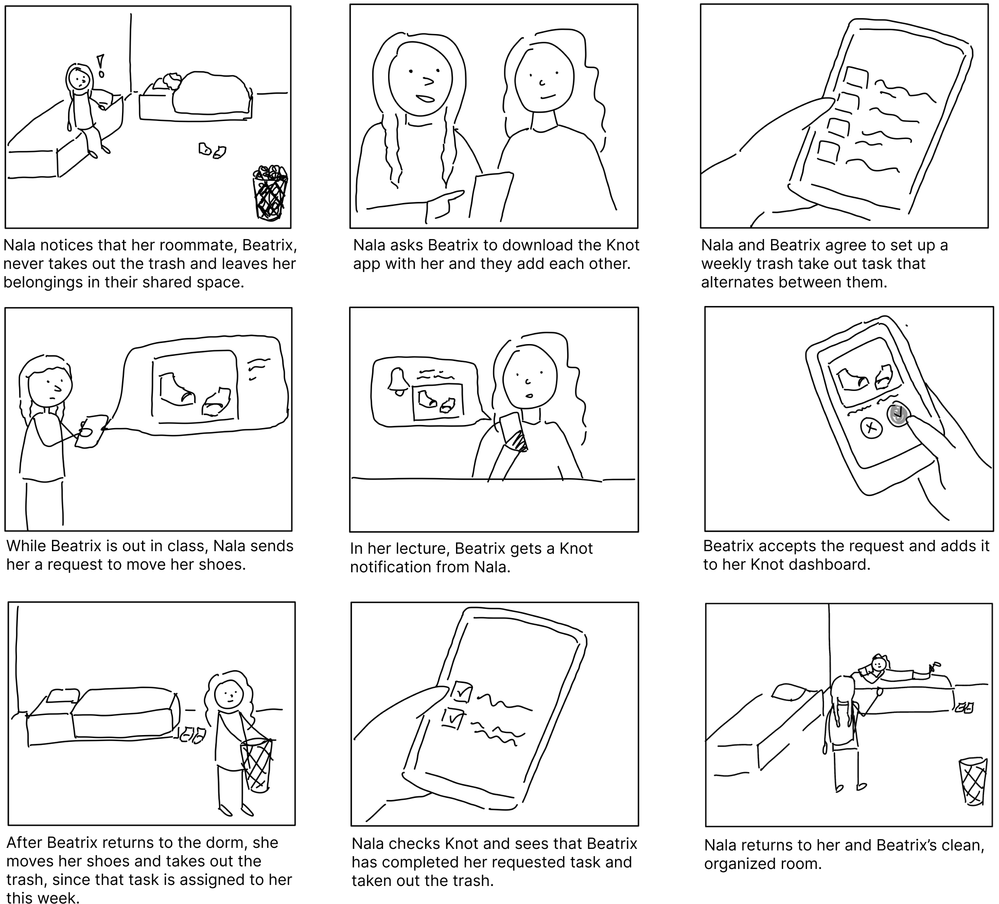
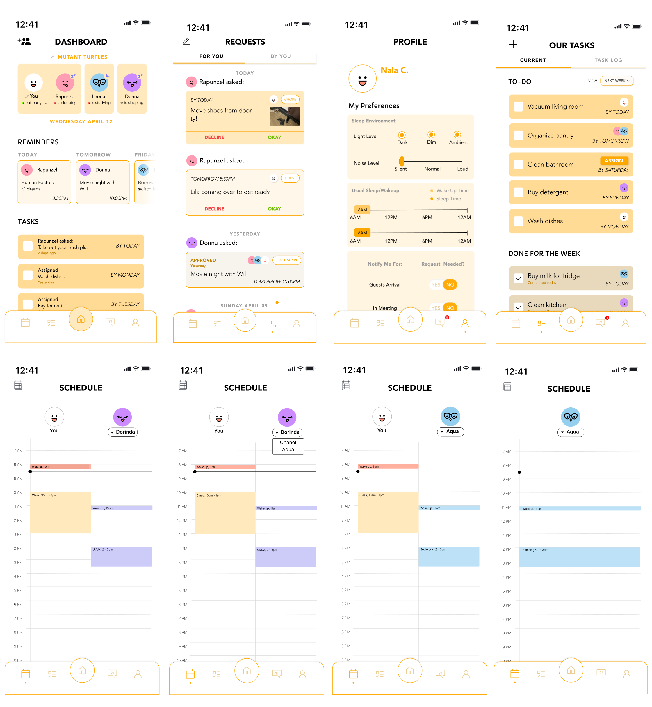
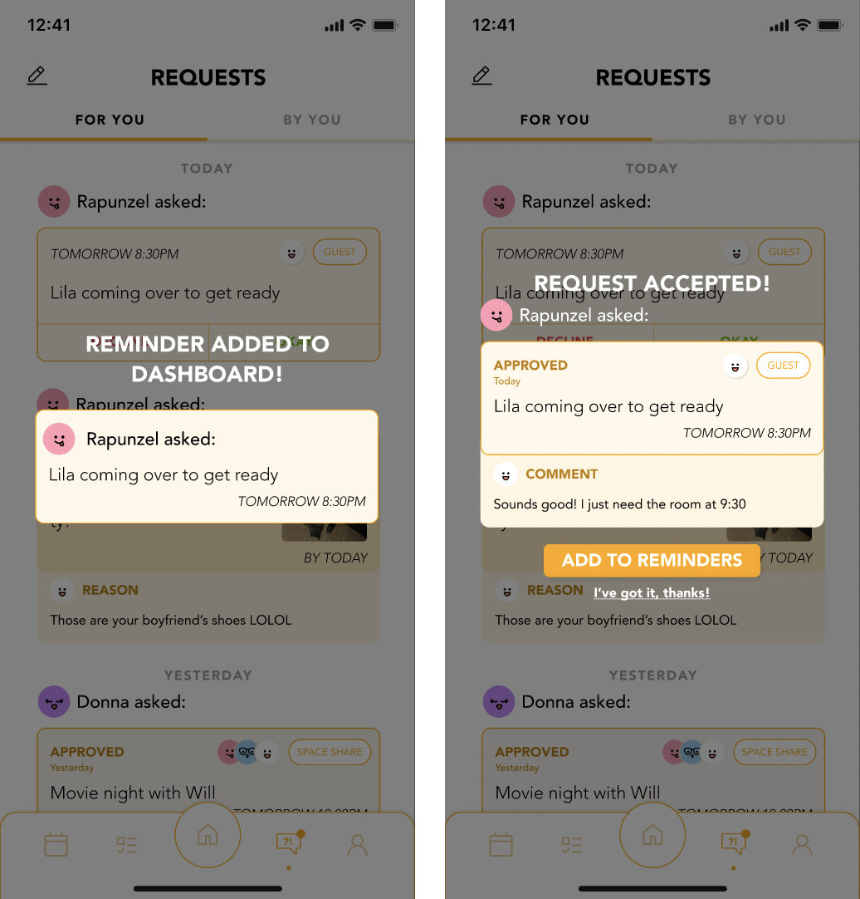
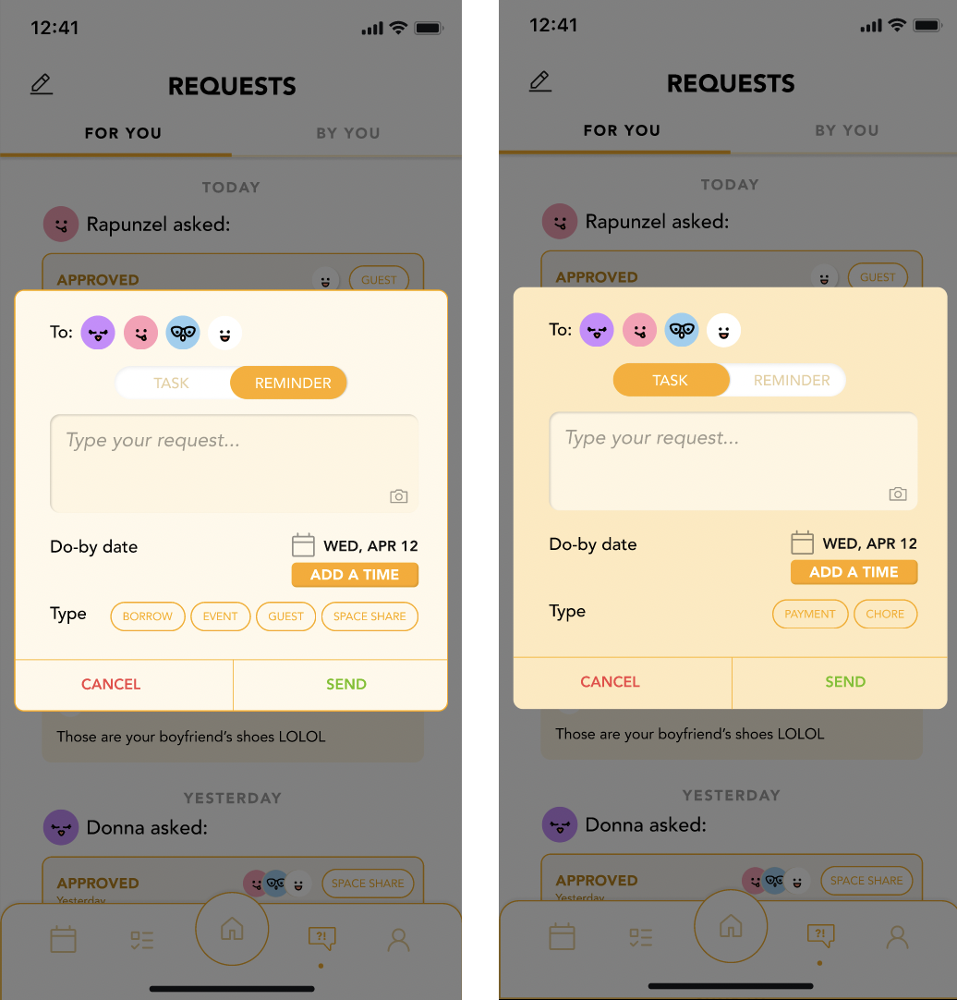
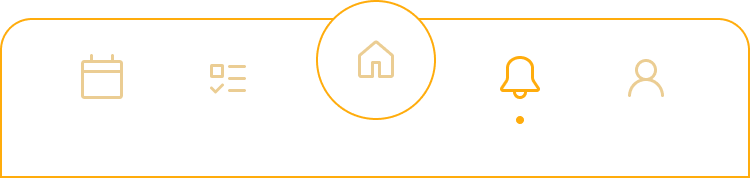
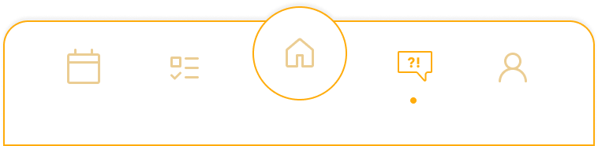

I. USER RESEARCH
My team and I began by conducting individual user interviews and sending out a survey to our communities, focusing on collecting anecdotes in order to understand the individual’s experience.
KEY OBSERVATIONS
🙇 Trends in Communication
Users reported having frequent communication in general, but when it came to discussing habits, communication was low. The reasons for this were twofold: Firstly, users felt that they already knew their roommate's habits, and secondly, they wanted to avoid potential conflicts or confrontations.
🎨 Motivation
Users expressed not specifying boundaries before moving in due to being previously friends with their roommates or feeling that it was awkward.
II. USER PERSONAS
From our interviews and survey results, we developed two extreme user types.
III. LOW FIDELITY MOCKUP
Each of our group members created an initial sketch of pages in order to brainstorm all the different possibilities for our screens.
Finalizing Sketches
We then went through a second iteration of sketches and finalized them into 5 main screens: Home, Schedule, Requests, Tasks, and Profile.
IV. Storyboarding
Based on our preliminary sketches, we created a storyboard that featured both of our personas.
V. LOW FIDELITY MOCKUP & RESPONSIVE DESIGN
Our team then went on to create our first iteration of our low fidelity wireframes for each of our screens.
I worked on the Schedule screens.
VI. Style Guide

VII. High Fidelity Mockup & Prototype
We then went on to create a hi-fi mockup of all our screens following our style guide.
VIII. User Testing
With our high fidelity prototype, we conducted four user tests on our peers, making changes based on the feedback we received.
MAJOR IMPROVEMENTS
1. Popup Clarification
Users were often confused about where Tasks and Requests went after taking an action like accepting or declining. To address this, we added a popup that informs users about the destination after they take action.

2. Categorization Improvement
Users expressed their desire for clearer differentiation between requests and tasks. To address this, we gave users the opportunity to categorize a request as task or reminder.

3. Icon Redesign
We discovered that the mental models of the requests icon were not aligned with our conceptual models. As a result, we redesigned the icon from the bell a chat to symbolize the "voicing out" needs and communication.

